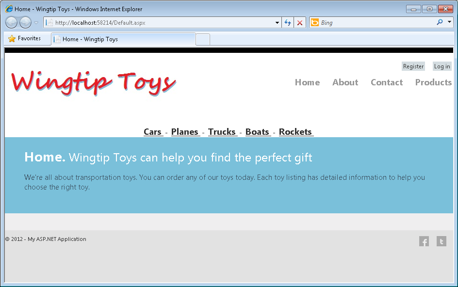

This download has been created for the Getting Started with ASP.NET 4.5 Web Forms (Wingtip Toys) tutorial series available on the ASP.NET web site. This series of tutorials guides you through the steps required to create an ASP.NET Web Forms application using Visual Studio 11 Express Beta for Web and ASP.NET 4.5 Beta.
The application you'll create is named the Wingtip Toys. It's a simplified example of a store front web site that sells items online. This tutorial series highlights several of the new features available in ASP.NET 4.5 Beta.
Visit the tutorial series:
Getting Started with ASP.NET 4.5 Web Forms
This tutorial series is the first installment of two. Comments are welcome, and we'll make every effort to update this tutorial series based on your suggestions.
The intended audience of this tutorial series is experienced developers who are new to ASP.NET Web Forms. A developer interested in this tutorial series should have the following skills:
Application Features
The ASP.NET Web Form features presented in this series include:
Tasks demonstrated in this first series include:
If you are new to ASP.NET Web Forms but have familiarity with programming concepts, you have the right tutorial. If you are already familiar with ASP.NET Web Forms, you can benefit from this tutorial series by the new features available in ASP.NET 4.5 Beta. If you are unfamiliar with programming concepts and ASP.NET Web Forms, seeGetting Started on the ASP.NET Web site.
The following screen shots provide a quick view of the ASP.NET Web forms application that you will create in this tutorial series. When you run the application from Visual Studio 11 Express Beta for Web, you will see the following web Home page.

After installing the prerequisites, you are ready to begin creating the new Web project that is presented in this tutorial series. If you would like to run the sample application that this tutorial series creates, you can download it from the MSDN Samples site. This download contains the following:
The download is a .zip file. To see the completed project that this tutorial series creates, find and select the C# folder in the .zip file. Save the C# folder to the folder you use to work with Visual Studio 11 Beta projects. By default this is the following folder:
C:\Users\<username>\Documents\Visual Studio 11\Projects
Rename the C# folder to WingtipToys.
Note
If you already have a folder named WingtipToys in your Projects folder, temporarily rename that existing folder before renaming the C# folder.
To run the completed project, open the WingtipToys folder and double-click the WingtipToys.sln file. Visual Studio 11 Beta will open the project. Next, right-click the Default.aspx file in the Solution Explorer window and click View In Browser from the right-click menu.